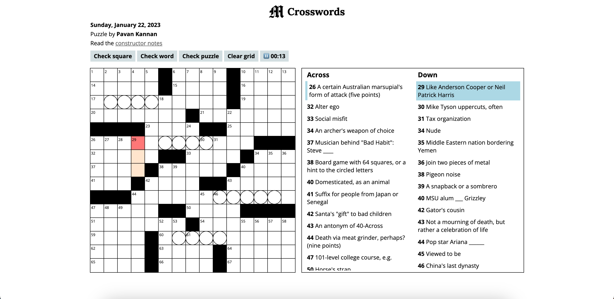
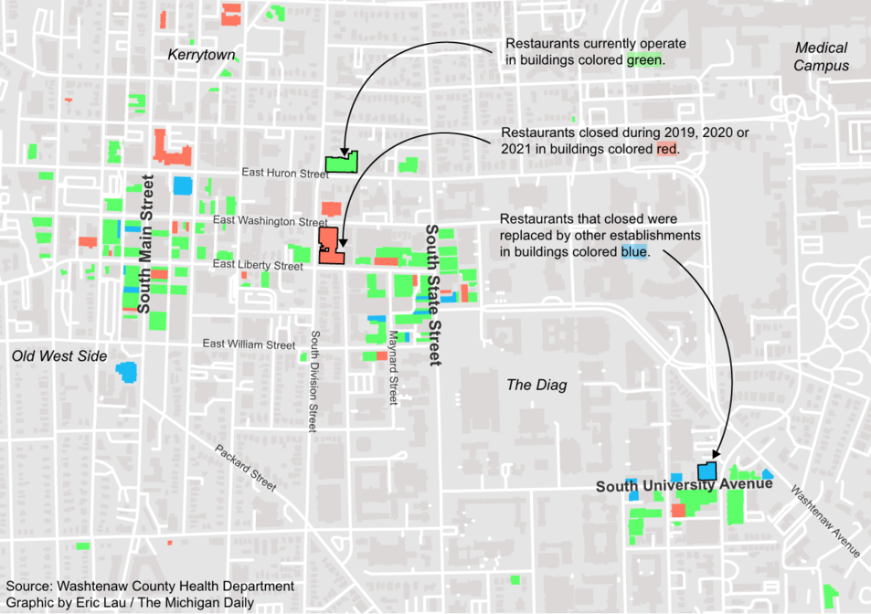

Hello! My name is Eric Lau.
I am a data journalist at The San Francisco Standard.
I am also the senior software engineer at The Michigan Daily. Formerly, I served as managing online editor, leading the product and data journalism teams.
Previously, I worked at The Texas Tribune as a data visuals fellow and an engineering fellow.
I currently study computer science, science, technology, and society (STS), and digital studies at the University of Michigan.
twitter, github, linkedin, résumé
ericlau at umich dot edu
Work
My main interests are data visualization and web development. Most of the featured works below are for The Michigan Daily and The Texas Tribune. You can find more of my personal and academic work on GitHub.
- Here's how much Greg Abbott and Beto O'Rourke have raised in the race for Texas governor, The Texas Tribune
- Abortion should be permitted in cases of rape and incest, around 80% of Texas voters say in UT poll, The Texas Tribune
- Texas school ratings show improvement compared to 2019, but those in poorer neighborhoods still lag, The Texas Tribune
- High-poverty schools struggle to earn Texas' highest rating. Some in the Rio Grande Valley break that trend., The Texas Tribune
- Massive power outage in Ann Arbor leaves thousands in the dark, The Michigan Daily
- City of Ann Arbor 2021 Special Election Results, The Michigan Daily
- Spring 2022 Engineering Fellow Reflections, The Texas Tribune
-
 The Michigan Daily Crosswords
The Michigan Daily, January 2023
A crossword application built with SvelteKit. -
MiC Style
The Michigan Daily, February 2023
A Michigan in Color website showcasing fashion and clothing from people of color. Built with Next. -

Black Hair Series
The Michigan Daily, February 2023
A Michigan in Color website featuring photography, video and interviews on Black hair. Built with Svelte. -

2022 Photographers' Favorites
The Michigan Daily, December 2022
A multimedia article showcasing Daily photographers' favorite photos from 2022. Built with Scrollama. -
Love Notes 2022 Edition
The Michigan Daily, February 2022
A website displaying love notes that University students sent to each other as cassette tapes. Built using Svelte. -
 More than 100 Ann Arbor restaurants closed in the past three years. How have these closures affected the community?
The Michigan Daily, December 2021
A map showing the status of Ann Arbor restaurants. Built with QGIS and Adobe Illustrator. -
UMich Class of 2025: By the numbers and their hopes for college
The Michigan Daily, September 2021
Data visuals conveying results from The Michigan Daily Class of 2025 survey. Built with D3 and Scrollama. -

Daily analysis finds historically large salary disparities between three U-M campuses
The Michigan Daily, April 2021
Data visuals and analyses exploring University salary and budget records. Analysis was conducted with Python and graphics were built with D3. -

We looked at the 301 high schools with the most applicants to U-M. Here's what we found
The Michigan Daily, March 2021
Data visuals and analyses exploring data from a FOIA request on University of Michigan feeder high schools. Analysis was conducted with Python and graphics were built with D3. -
Graphics Engine
Computer Graphics, January 2020 - June 2020
An MDL graphics engine with lighting and coordinate systems capable of rendering animations. Built using C and Python.